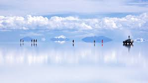

| Switzerland | Salar de Uyuni |
|---|---|
|
|
 |
Switzerland, officially the Swiss Confederation, is a landlocked country at the confluence of Western, Central and Southern Europe.
Salar de Uyuni (or "Salar de Tunupa")[1] is the world's largest salt flat, or playa, at over 10,000 square kilometres (3,900 sq mi) in area.